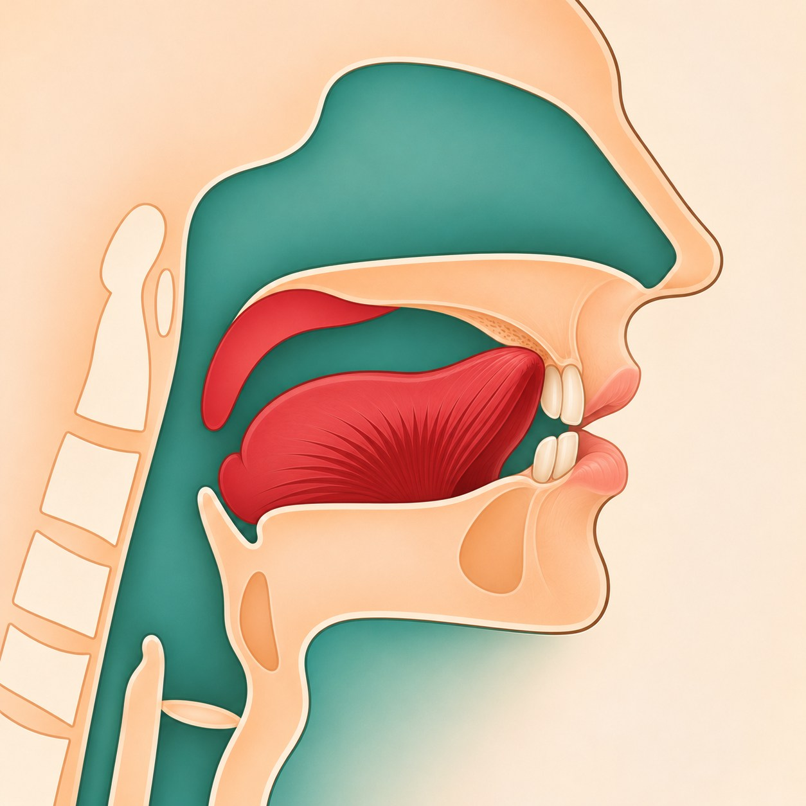
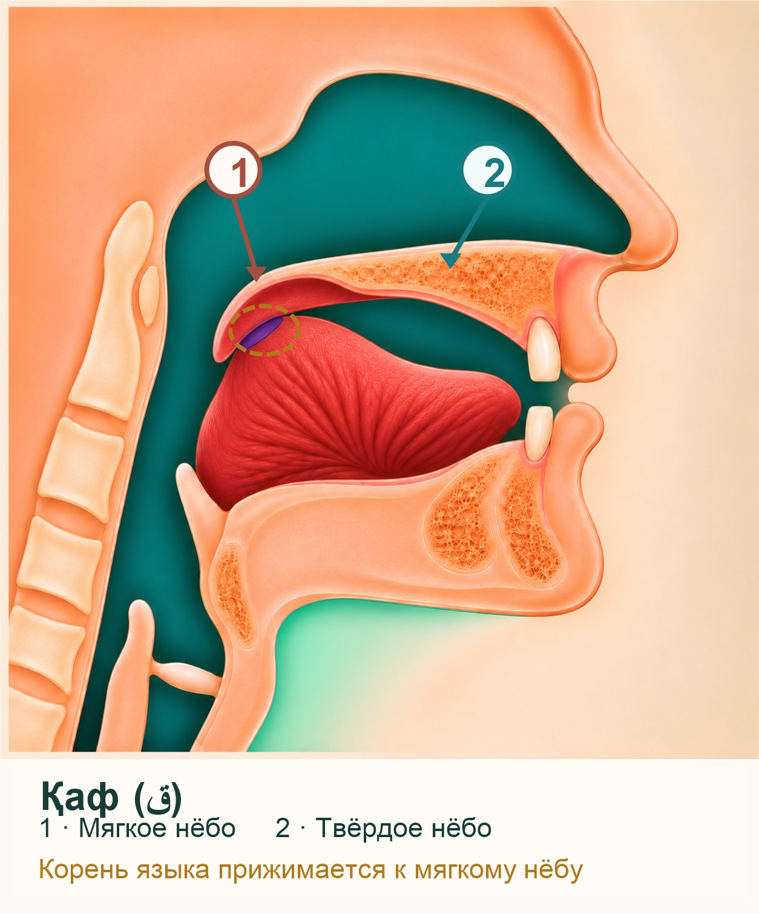

1 Изляк
- Махрадж находится на кончике языка либо на губах.
- Буква произносится легко.
- Звук быстро выходит наружу.
Как образуется звук: сравниваем положение органов речи, движение воздуха и звучание уже знакомых букв.
Сравниваем место образования: кончик языка и губы или более глубокие участки речевого аппарата.
| Сыфат | Термин на арабском | Дословный перевод | Что происходит физически |
|---|---|---|---|
| Изляк (Скольжение) | إِذْلَاقُ الْحُرُوفِ | Лёгкость / скольжение букв | Буквы произносятся очень легко, плавно и быстро, потому что их махраджи расположены на самых краях речевого аппарата — на кончике языка или на губах. Звук буквально «соскальзывает» наружу без малейших усилий. |
| Исмат (Удерживание) | إِصْمَاتُ الْحُرُوفِ | Тяжесть / удерживание букв | Буквы произносятся с лёгким усилием, весом и задержкой, потому что их махраджи находятся глубже во рту или горле. Звук удерживается внутри артикуляционной базы, требуя более плотной фиксации языка или гортани. |


Это буквы ف ر م ن ل ب. Остальные буквы относятся к Исмату.